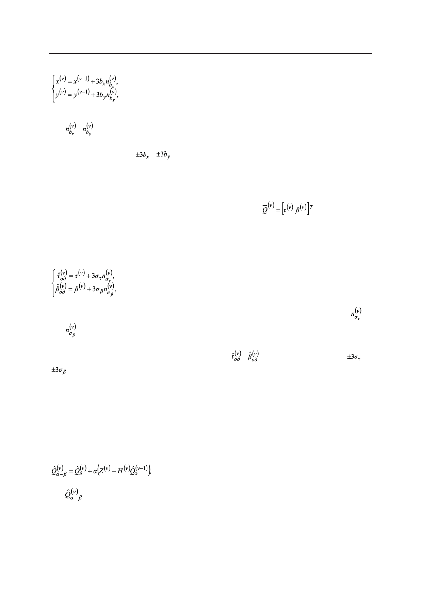

Линейная фильтрация выходных данных в охранной однопозиционной системе
(6)
где bx, by – среднеквадратические отклонения (СКО) изменения координат за один такт;
, – гауссовские случайные величины.
Коэффициент 3 в системе уравнений (6) означает, что случайные величины x(v), y(v)
попадают в интервалы , .
2. Получение оценки и фильтрация
Несмотря на то, что в данной работе изменение объекта происходит в декартовой системе
координат, подвергаться оцениванию будут первичные параметры, а именно временная за-
держка τ(v) и пеленг β(v) сигнала (которые образуют вектор
) с дальнейшим
их переводом в декартову систему координат. Как было указано выше, сначала проис-
ходит оценка параметра за интервал наблюдения, в течение которого ОН считается не-
подвижным. Интервал наблюдения будем считать равным одному импульсу. Оценка по
одиночному импульсу может быть записана как:
(7)
где στ, σβ – среднеквадратичные отклонения измерения временной задержки и пеленга, ;
– гауссовские случайные величины.
Полученные таким образом оценки подвергаются фильтрации. Коэффициент 3 в си-
стеме (7) предполагает, что случайные величины , попадают в интервалы ,
. Рассмотрим некоторые виды линейных фильтров [5].
α - β фильтр. Данный тип фильтрации подразумевает в общем виде отдельное оце-
нивание координатного параметра (в выражениях фигурирует переменный коэффици-
ент α) и скорости изменения координатного параметра (фигурирует коэффициент β). Под
координатными параметрами подразумеваются непосредственно координаты объекта, а
также связанные с ним временные задержки, пеленги и пр. Поскольку в рассматривае-
мой задаче нас интересуют координаты цели, рассмотрим только уравнение фильтрации
координатного параметра:
(8)
где
– оценённые параметры на текущем шаге;
α – коэффициент фильтрации;
Z(v) – значения измеряемых величин на текущем шаге;
H(v) – матрица, определяющая связь измеряемых величин Z(v) и параметров Q(v) на
текущем шаге;
16
Российский технологический журнал 2017 Том 5 № 5